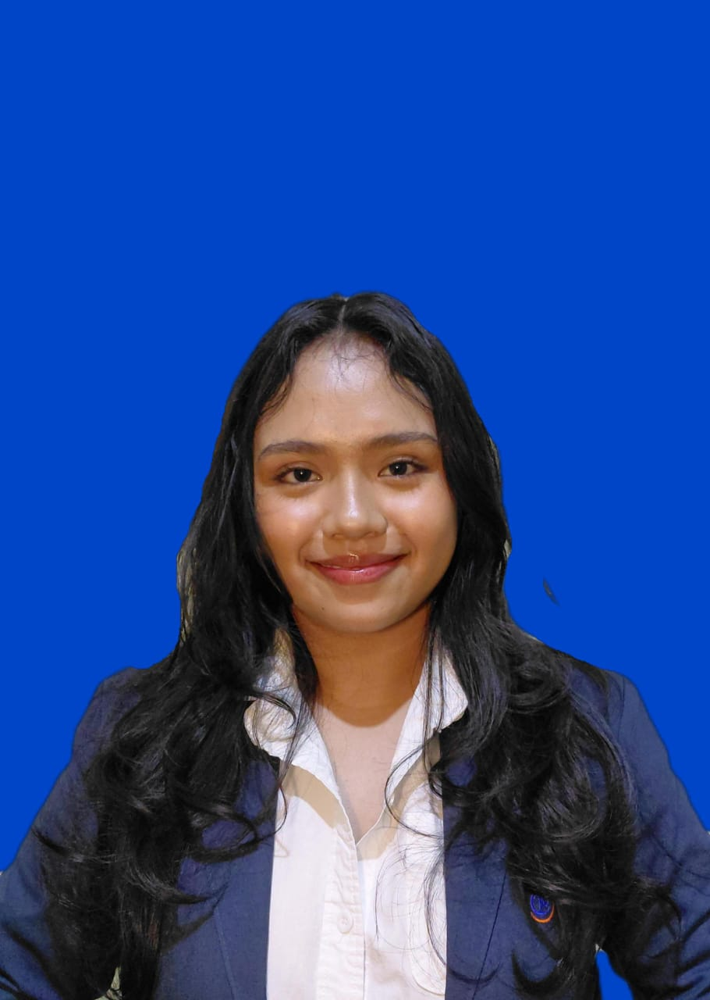

HELLO, WELCOME TO MY PORTFOLIO!
Hi, I'm Baquita Carenina Alexia Nheu Teixeira
Information Systems Student
I am an international student from Timor-Leste, currently studying Information Systems at Universitas Widyatama in Bandung, Indonesia. I am passionate about technology, website development, information systems, and cybersecurity. I enjoy learning new things, exploring new opportunities, and developing my skills for the future.
Get to Know Me
GET TO KNOW ME
Personal Profile
Full Name: Baquita Carenina Alexia Nheu Teixeira
Student ID: 251111025
Nationality: Timor-Leste
Place of Origin: Oe-Cusse, Timor-Leste
Program: Information Systems
University: Universitas Widyatama
Current Location: Bandung, Indonesia
Interests: Technology, Programming, Information Systems, and Cybersecurity
Career Goal: To build a successful career in Information Technology and Cybersecurity.
MY LEARNING JOURNEY
Education and Skills
🎓 Education
Universitas Widyatama
Bachelor's Degree in Information Systems
2025 - Present
Currently learning programming, database management, system analysis, web development, and information technology.
💻 Skills and Interests
- HTML for website structure
- CSS for website design
- JavaScript for website interaction
- Java Programming
- SQL and Database Management
- Microsoft Word and PowerPoint
- Teamwork and Communication
- Presentation and Problem-Solving
Educational Background
| No. | Institution | Education Level | Period |
|---|---|---|---|
| 1 | Universitas Widyatama | University | 2025 - Present |
| 2 | Centro de Aprendizagem / Formação Escolar | Senior High School | 2021 - 2024 |
| 3 | Centro de Aprendizagem / Formação Escolar | Junior High School | 2018 - 2020 |
| 4 | 28 de Agustus | Elementary School | 2012 - 2017 |
MY ORGANIZATIONAL JOURNEY
Organizational Experience
HIMASI - Information Systems Student Association
Division: Human Resources Development (PSDM)
Actively involved in student organization activities, student development programs, teamwork, and organizational planning.
Campus Event Committee
Role: PDD Coordinator
Participated in campus event preparations, coordination, publication, and documentation.
MABIM - Student Orientation Program
Participated in campus orientation activities and contributed to student program activities at Universitas Widyatama.
LDKM - Student Leadership Training
Division: Medical Division
Contributed to participant health preparations and supported the medical needs of participants during the leadership training program.
LET'S CONNECT
Get in Touch!
Thank you for visiting my personal portfolio. Feel free to connect with me through my social media.
Visit My Instagram Visit My LinkedIn